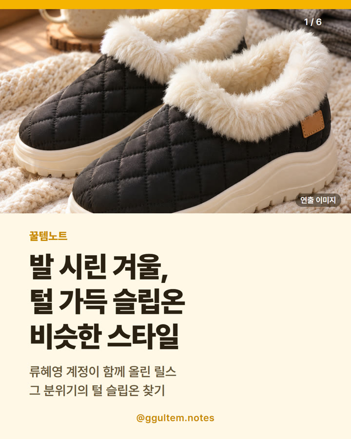

털신발 여성 추천 — 털 안감 슬립온 비슷한 스타일 고르는 법 (레이지고 MZH51)
2026.11.09 작성 · 2026.11.10 수정 · 꿀템노트
털신발은 안감의 털 구성, 밑창의 미끄럼 방지 표기, 발수 표기, 내 발 사이즈에 맞는 옵션을 보고 고르면 돼요.

이미지는 이해를 돕기 위한 일러스트이며 실제 상품과 다를 수 있어요.
비슷한 스타일: 아래 상품은 기사 속 제품과 같은 제품이 아니에요.
류혜영 계정이 함께 올린 릴스, 어떤 이야기였나
류혜영 계정이 공동 작업자로 표시된 인스타그램 릴스(2026.11.06 게시, 게시 계정 rhywith)에서 안쪽이 털로 푹 감싸진 따뜻한 슬립온 신발 이야기가 나와요. 영상에는 슈즈 브랜드 계정이 태그돼 있어 홍보 성격일 수 있어요.
텐아시아(태유나 기자, 2026.10.19)에 따르면, 류혜영은 한 슈즈 브랜드의 2026 FW 컬렉션에 크리에이티브 디렉터로 참여했고, 컬렉션에는 부츠·클로그·슬립온이 포함돼요.
이 글의 상품은 영상 속 신발과 같은 제품이 아니라, 털 안감 슬립온이라는 분위기가 비슷한 '비슷한 스타일'이에요. 연예인 사진이나 영상 장면은 사용하지 않았어요.
털신발 여성 고르는 법 — 체크포인트
| 확인 항목 | 볼 곳 | 메모 |
|---|---|---|
| 안감 | 상품명·상세 사진 | 털이 어디까지 덮였는지 사진으로 확인 |
| 밑창 | 상품명 표기 | 미끄럼방지 표기 여부 |
| 겉감 | 상품명·상품 정보 | 이 글의 상품은 소재 표기가 인조가죽(합성피혁) |
| 사이즈 | 옵션 선택란 | 털이 두꺼운 신발은 양말 두께까지 고려해 옵션 확인 |
| 발수 | 상품명 표기 | 발수방한 표기, 방수 보장은 아님 |
털신발 가격은?
표의 가격은 2026.11.09 기준이며 쿠폰·옵션·시점에 따라 달라지고 변동 가능해요. 가격과 재고는 쿠팡 상품 페이지에서 다시 확인하세요.
| 항목 | 이 글의 상품 | 비고 |
|---|---|---|
| 게시일 기준 가격 | 파트너스 링크 생성 화면 표시가 21,400원 (2026.11.09 확인, 쿠폰·옵션·구매 시점에 따라 실제 결제가는 달라질 수 있음) | 같은 날 상품 페이지에 쿠폰 적용 가격이 더 낮게 표시된 경우가 있었어요. 실제 결제가는 상품 페이지에서 확인하세요 |
| 정가 표기 | 69,700원 | 판매자 표기값 |
| 상품명 표기 | 털신발·슬립온·미끄럼방지·발수방한 | MZH51 |
| 리뷰 | 94개 상품평 (2026.11.09 기준) | 별점은 상품 페이지에서 확인 |
| 다른 유형 ①: 패딩·기모 안감 | 상품 페이지에서 확인 | 같은 검색 결과에서 가격 범위가 넓어요 |
| 다른 유형 ②: 털 모카신·로퍼형 | 상품 페이지에서 확인 | 가격과 사양이 제품마다 달라요 |
쿠팡 랭킹순 검색 결과(2026.11.09, '털 슬립온 여성 방한 털신')에서 이 상품은 60개 결과 중 상단에 보였어요. 다른 유형은 링크를 따로 두지 않았어요.
이런 분께 / 이런 분은 다른 선택
상품 페이지에 표기된 사양과 사진만 보고 정리했어요. 직접 신어 본 경험이 아니며 보온 성능을 보증하지 않아요.
- 이런 분께: 안쪽이 털로 감싸진 겨울 슬립온을 찾는 분
- 이런 분께: 끈 없이 신고 벗는 신발을 좋아하는 분
- 다른 선택: 발볼이 넓거나 두꺼운 양말을 신는 분은 옵션·사이즈 문의를 먼저 확인하세요.
- 다른 선택: 장시간 걷는 용도라면 밑창 두께와 무게 표기를 더 꼼꼼히 비교하세요.
이번에 소개하는 상품(비슷한 스타일)
레이지고 여자 털신발 겨울 가벼운 미끄럼방지 슬립온 MZH51
상품명에 털신발, 슬립온, 가벼운, 미끄럼방지, 발수방한이 표기돼 있고 상품 페이지 사진에서 털 안감이 보여요. 소재 표기는 인조가죽(합성피혁)이에요. 보온 성능이나 방수를 보증하는 내용은 아니에요.
자주 묻는 질문
털신발 여성 추천 기준이 뭔가요?
안감 털 구성, 밑창 미끄럼방지 표기, 사이즈 옵션, 소재를 확인하면 좋아요. 정확한 사양은 상품 페이지를 확인하세요.
이 상품이 류혜영 릴스 속 신발인가요?
아니에요. 영상 속 신발과 같은 제품이 아니라 털 안감 슬립온이라는 분위기가 비슷한 '비슷한 스타일'이에요.
털 슬립온 가격은 얼마인가요?
이 글의 상품은 2026.11.09 기준 21,400원으로 표시됐고, 쿠폰·옵션·시점에 따라 달라져요.
털신발 사이즈는 어떻게 고르나요?
옵션별 사이즈 표기와 상품 정보를 확인하고, 두꺼운 양말을 신을 예정이라면 판매자 안내를 먼저 살펴보세요.